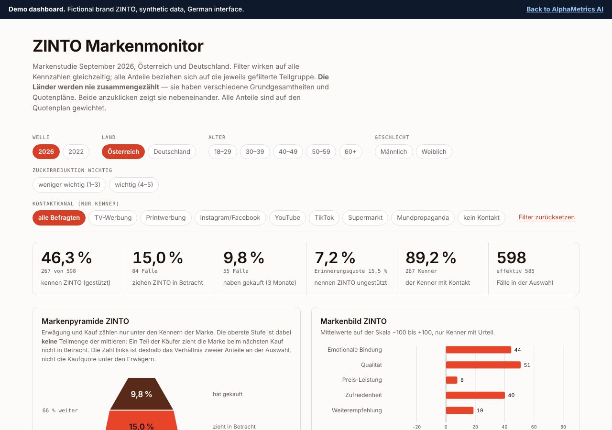
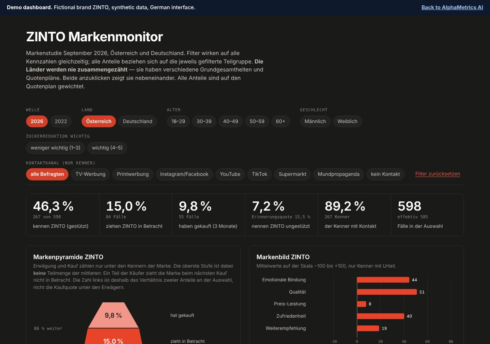

Brand tracking and funnel studies
Awareness, consideration and purchase for your brand and its real competitors, asked in one grid so conversion rates compare. A baseline, or repeated waves.
Market research · Vienna
We design, field and analyse brand and consumer studies for companies in Austria and the DACH region. Every number comes with its confidence interval, its base and its limits, so you can decide on it.
What we do
Four services that fit together. Take one, or let us run the whole study.
Awareness, consideration and purchase for your brand and its real competitors, asked in one grid so conversion rates compare. A baseline, or repeated waves.
A tested instrument: logic, randomisation, panel redirects and automated import checks, before the first interview is fielded.
Weighting, confidence intervals, driver models and segment profiles. We tell you what moves a metric, and what the data cannot show.
Interactive dashboards that suppress thin subgroups, a plain-language management deck and a field report that documents every exclusion.
How we work
We start from the decision the result must inform, and write down what would change your mind.
Questionnaire, brand grid and quotas, tested in the survey platform before launch.
Attention checks and speeder rules run in the field. Exclusions are counted and reported.
Weighting, intervals and models with the multiple-comparison corrections the question needs.
Deck, dashboard, field report and re-runnable scripts, so every number can be traced.
Showcase
ZINTO is a fictional sugar-reduced snack bar. We use it to show the full workflow, from design and field quality to weighting, analysis and reporting.
Fictional brand, synthetic data. The figures were generated, then analysed with our standard pipeline, so the case study shows real method without exposing a client. Hover or tab to any bar for its interval and base, or switch a chart to its table.
Share of respondents who recognise each brand when shown the list. Whiskers are 95% confidence intervals.
Where the brand loses people, set against the median of brands with at least 30 aware respondents.
The gap is at the first gate: of those aware would consider the brand, against in the category. Once considered, it converts as well as its competitors ( against ).
Age and gender matter, education does not. They were tested together in one model, so one cannot masquerade as another.
Awareness falls from among 18 to 29-year-olds to among those over 60, and is higher among women ( against ). Education, income and region show no effect once age and gender are accounted for.
Only respondents who know the brand were asked. Channels with fewer than 30 respondents are not shown.
The shelf is the main point of contact (), social media comes second. This is an association, not an effect: the order of contacts was not recorded.
The four findings the rest of the case study supports, in the order we would present them.
Between the 2022 and 2026 waves the awareness question changed from a forced-choice matrix to a tick-list. That alone lowered awareness for almost every brand, so the raw change cannot be read as brand growth.
Austria, base in 2022 and in 2026, both weighted. Intervals for the adjusted gain are bootstrapped; p-values for the single brands are corrected for multiple comparisons (Holm).
The same questionnaire ran in two countries. The brand was far less known in Germany, and that decides what we are allowed to report.
completed interviews, of which know the brand
completed interviews, but only know the brand ( would consider it, bought it)


Filters for country, wave, age, gender and contact channel act on every figure at once. Subgroups with fewer than 12 respondents are never shown, and the countries are never added together. The demo has a German interface and synthetic data.
Open the demoFindings in plain language, one message per slide, with a methods annex for the sceptical reader.
Sample, quotas, exclusions, weighting and data-quality flags, written down before anyone asks.
Scripts and logs, so every figure in the deck can be reproduced from the cleaned data.
Survey files that passed automated import checks, plus a codebook that makes waves and countries stackable.
Standards
A precise number on a thin base is a risk to your decision. These rules keep the precision honest.
A point value alone invites false precision. Results carry their 95% interval and their base.
Brand results rest on at least 30 respondents. Dashboard cells under 12 are suppressed, never shown as a noisy percentage.
Attention checks and speeder rules are set before fieldwork. We tell you how many interviews they removed, and why.
Every weighted result states the design effect and the effective sample size it leaves.
Different populations and quota plans are laid side by side. We compare only what both fields actually asked.
Cross-sectional data show relationships. We write “is associated with” unless the design supports a causal word, and we correct for multiple comparisons.
About
alpha-metrics.ai is a market research practice based in Vienna. We combine careful survey craft with statistical discipline, and we deliver it at the pace of a commercial project.
Our focus is brand and consumer research for companies in Austria, Germany and Switzerland: who knows you, who considers you, who buys, and what would change that.
Contact
A few lines are enough. We will tell you whether research can help, and what it would take.
Vienna, Austria · LinkedIn